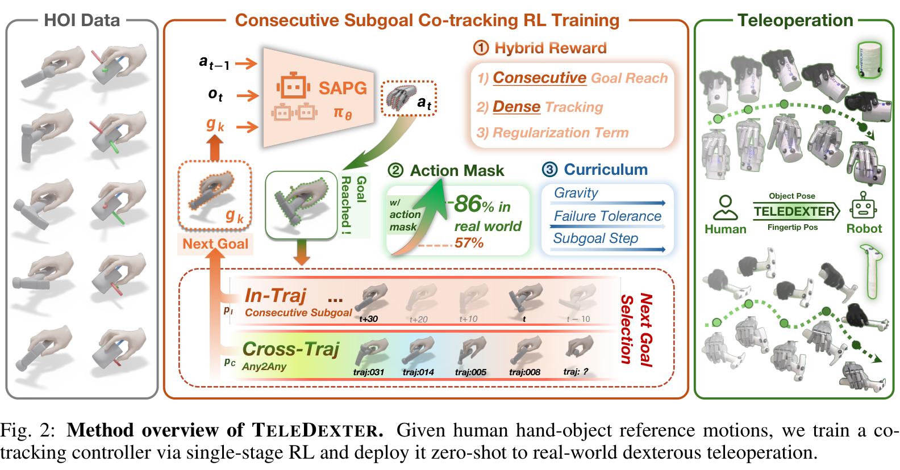
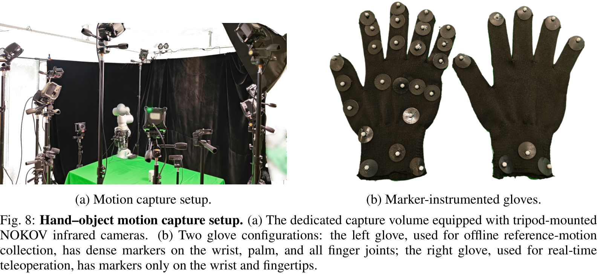
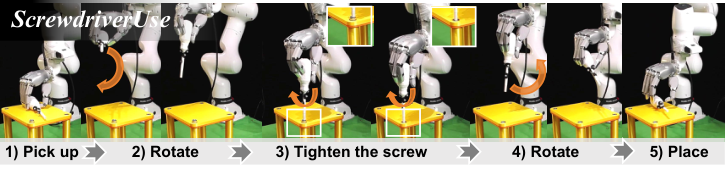
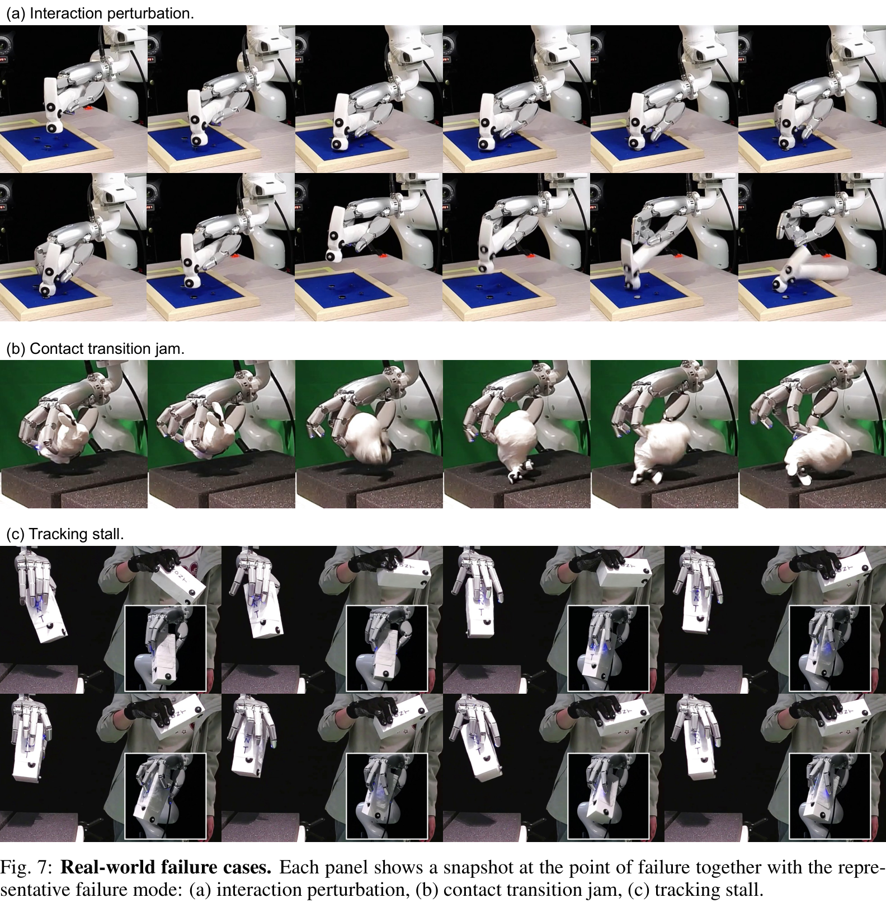
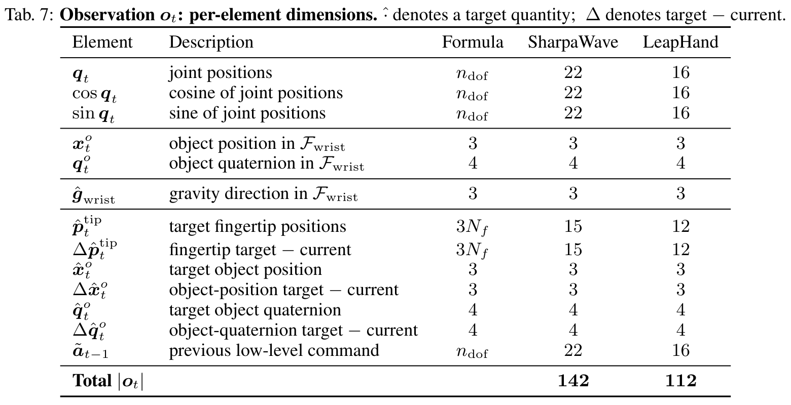
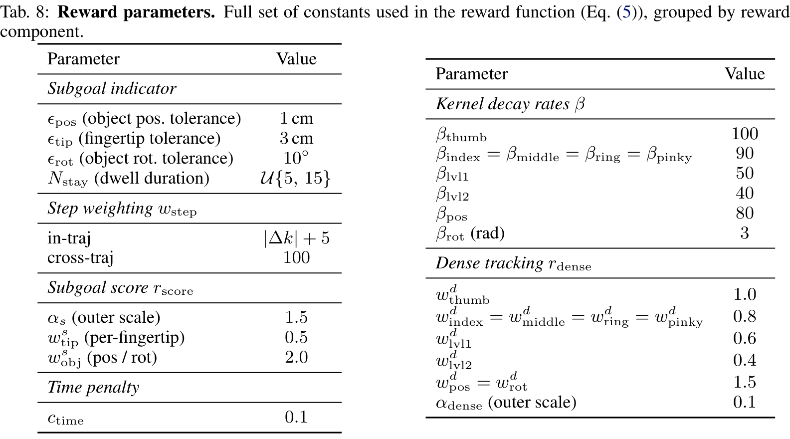
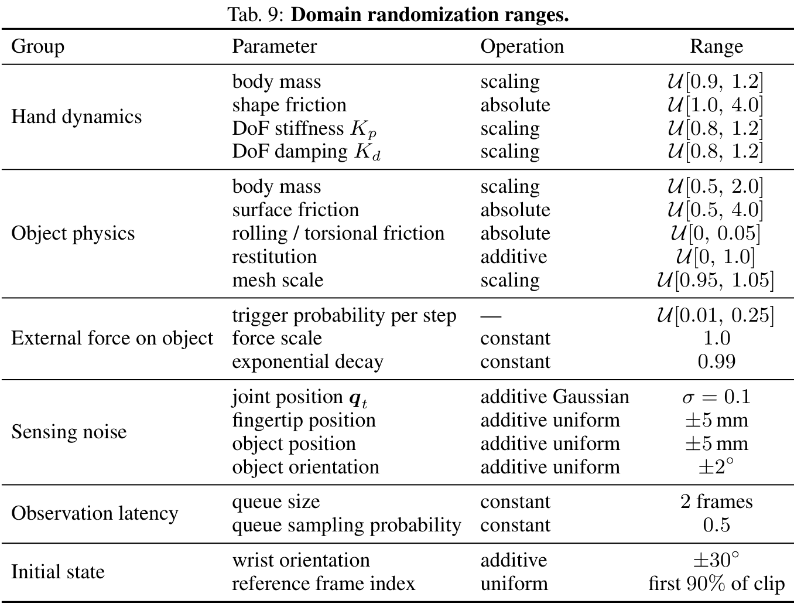
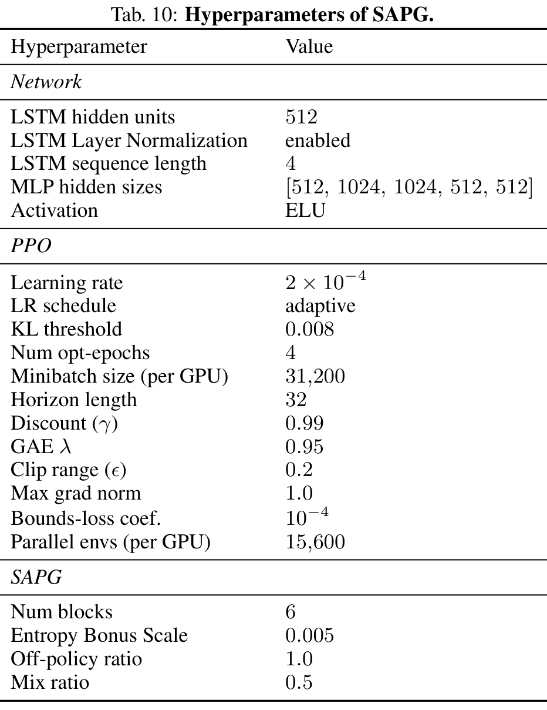

同一个任务里，有三个不同的问题。
设想操作者已经握住螺丝刀，接下来要把刀尖转向下方，再持续转动工具。机器人手的结构与人手不同：仅仅复制手指角度，既不能保证接触位置对齐，也不能保证工具不会滑落。
想要什么几何关系？
把人手动作转成机器人可表达的指尖位置，同时保留工具的位置与朝向目标。
怎样经过中间状态？
通过物理仿真中的反复试错，学习支撑、换握与转动之间的接触控制。
实机上证明了什么？
在指定手、物体和任务协议下评估完整成功与阶段进度，并记录失效方式。

先把人手动作变成机器人可以追踪的目标。
离线采集使用 NOKOV 光学动捕。完整标记手套提供手部关节位置与位姿，物体上也有刚体标记。每个物体录制 150 段 × 20 秒，论文报告共约 50 分钟参考动作。
参考构造分两步：先用向量重定向保留动作的几何意图；再利用物体 Mesh 的表面与内外距离，调整贴合、穿透、指间碰撞和时间平滑。
优化得到机器人的关节参考 q*，正运动学再将 q* 转成指尖目标。物体目标保留采集到的位姿。它们一起构成“共同跟踪”的目标。

- Lvec
- 向量匹配：保持人手动作与机器人动作的几何关系。
- Lsurf
- 近接触表面项：拉近物体外侧、被选中的近表面点。
- Lpen
- 穿透惩罚：把进入物体内部的手表面点推出来。
- Lcol
- 指间碰撞：减少不同手指碰撞球之间的重叠。
- Lsmooth
- 时间平滑：约束速度、加速度与 jerk，抑制抖动。
它看到“现在”，也看到“下一步想要什么”。
在手内控制分支，位置与姿态都转换到手腕坐标系。这样，工具与手共同平移时，其相对几何可以保持一致；重力向量则告诉策略，手中的“向下”在哪里。
当前状态 · State
机器人关节角与三角编码、工具当前的位置和四元数、腕坐标下重力、上一次低层命令。
目标与误差 · Goal
目标指尖位置、目标物体位姿，以及它们相对于当前状态的误差。目标工具姿态与当前工具姿态必须分开。
n 是关节自由度，F 是指尖数。Table 7 的总维度已经包含目标；不要在 142 维之后再重复追加一份目标。
腕坐标为什么有用？重力能告诉它完整绝对朝向吗？
标准坐标变换可以写为 pwrist = RwristT(pworld − twrist)：先消除手腕的平移，再消除其旋转。它描述工具相对于手的位置。
重力可以指示倾斜与“向下”，但单靠一个重力向量不能确定绕重力轴的绝对 yaw。不要把它扩展成完整世界姿态的可观测性证明。
先补齐十个术语：把这里会用到的最低先验一次说清
- Pose / 6D
- 位姿同时描述物体在哪里、朝向哪里：三维平移加三维旋转，共 6 个自由度。Table 7 用四元数的 4 个分量表达旋转，但它受单位长度约束，且 q 与 −q 表示同一旋转；4 个数不代表多出一个旋转自由度。
- FK / IK
- 正运动学 FK从机器人关节角计算连杆或指尖的位置，本文用它把优化后的 q* 转成指尖目标。逆运动学 IK从期望末端位姿反求关节配置，本文手臂分支用它跟踪操作者的手腕。
- DoF
- 自由度描述独立的运动变量；这里手部动作的 22 / 16 维对应 SharpaWave / LeapHand 的关节自由度。同一个手指可以包含多个 DoF，所以随机选 3 个 DoF 不能理解为选 3 根手指。
- Contact /
Finger gaiting - 接触是手指与物体之间传递支撑与运动的物理关系；有接触不代表策略直接看到了接触力。手指换步指改变部分手指的接触位置、由其他接触继续支撑，例如转动螺丝刀时重新布置抓握；这是机制示意，不是论文规定的固定换指顺序。
- Policy / RL /
Reward - 策略 policy根据当前观测、目标和历史上下文产生动作；本文输出再转换为关节位置命令。强化学习 RL在交互中根据奖励 reward更新策略，奖励评价动作后是否更接近或到达目标，并不直接告诉它每根手指应发什么命令。
- Episode /
Env step - Episode是一段从初始化到终止的仿真交互；环境步是其中一次推进与观测更新。62,400 个并行环境各走一步，会累计许多环境步，所以总训练的约 10¹⁰ 步不能按单台机器人的动作时长直接换算。
- Dense / Sparse
- 这里说的是奖励给出的频度：dense 项每步提供误差相关引导，sparse 项要等满足子目标到达事件才触发。它们不是点云密度，也不是网络参数稀疏度；本文将二者结合，再加入时间成本。
- LSTM
- LSTM是一种带内部记忆状态的循环网络，帮助策略利用前后观测的时间上下文，而不只孤立看一帧。附录给出 hidden size 512 和训练序列长度 4；后者不是“实机最多记住四帧”的证据。
- SAPG
- 本文采用的 RL 训练方法；按作者描述，多个 block 独立探索，再汇聚梯度推进学习，附录使用 6 个 blocks。它们不是部署时的六种固定技能或六个必然轮流切换的专家，论文没有在此展开算法全部细节。
- Sim-to-real
- 仿真到现实迁移是把仿真学到的策略部署到真实机器人，同时面对摩擦、柔顺、测量和时延等差异。本文以域随机化和命令 masking 增强应对能力，真实环境冲击和接触卡滞仍构成边界。
术语解释结合 §B.3.2–C.1，pp19–20、§C.2–C.4，pp21–22 与 §C.8–C.9、Table 10，pp25–26。四元数约束是该表示的基础数学说明，不是论文新增机制。
沿着一条命令，走完控制闭环。
绿色表示当前状态，蓝色虚线表示目标。下面的螺丝刀与手指是示意形状：点击步骤，查看一次控制更新中信息如何流动。
手臂另走一条分支：世界坐标下的操作者手腕位姿，经逆运动学变成机械臂关节目标。手内策略集中处理腕坐标下的手指—物体关系。
来源：Fig. 2、§3，pp4–6；§B.3.2、§C.1，pp19–20。图中具体工具角度仅为教学设定。
动作可以意味着“继续保持”。
附录的网络输出是归一化关节残差，再转换为位置命令。它不是电机扭矩，也不是把人手每一个关节直接复制过去。
来源：§C.1，p20。正文与附录对动作符号的抽象层次不同，阅读实现应以残差转换说明为准。
工具到位、指尖到位，还要停留一小段时间。
如果工具旋转正确，但手指还在危险的换握中，单看工具误差会过早宣告成功。训练里的子目标到达条件同时检查三类误差，并要求连续满足一个停留窗口。
星号代表目标。Log 把三维旋转差转换为旋转向量，其长度就是角度误差；公式计算使用弧度。指尖门槛要求每根指尖过关，不是平均误差过关。
命中后：换目标
90% 概率在同一参考中按间隔选新目标；10% 概率换到同一物体的另一条参考，保留帧索引 k。目标变了，仿真中的工具不会瞬移。
跨度上界随课程从 40 增至 80 参考帧。完整下界与负向跳转实现没有列全。
失败后：重置状态
结束当前 episode，再从参考轨迹前 90% 的某一帧初始化手与物体状态。这里改变的是仿真的物理初态。
例如物体位置误差超过 15 cm 会终止；另有速度安全界限与累计超容差帧预算。
主要奖励“到达”，小奖励指路，时间成本催促前进。
- 𝟙hit
- 事件开关：完成连续停留条件时才为 1。还没到达时，主要稀疏项为 0。
- wstep
- 跨度权重：同轨迹为 |Δk| + 5；跨轨迹情况使用 100，鼓励处理更大的参考切换。
- ρi
- 连续相似度：误差为零时是 1，误差越大越接近 0。β 决定下降有多快。
- rdense
- 每步的小引导：指尖、两级指关节与物体误差的加权项，帮助初学策略找到方向。
- −0.1
- 每步时间成本：避免一直停在“差不多接近”的位置。
一个能手算的例子
假设 SharpaWave 五个指尖和物体都零误差，每个 ρ 都为 1，则：
若 |Δk| = 20，命中时的稀疏项为 25 × 9.75 = 243.75，再加 dense 项并减时间成本。
这是按公式计算的理想例子，不是测得的单步平均奖励；非命中时不能领取这笔奖励。
误差怎样进入奖励？
以非拇指为例，β = 90。若指尖距离误差为 1 cm：
这里使用米；旋转项使用弧度。权重和单位混用，会使同一个“1”对应完全不同的惩罚。
这一计算只说明指数核的形状，不说明论文平均指尖误差就是 1 cm。
来源：Eq. (5)–(8)、§C.2，pp20–21。完整 β 与 dense 权重见本页参数区。
让部分关节暂时“听旧命令”。
仿真里的各个电机可以同步响应，真实系统却有时延和不完全一致的执行。Random action masking 在训练时制造部分过期命令：暂时冻结选中的关节命令，其余关节继续接收新输出。
- 触发：当前没有活跃 mask 的控制步，以 0.15 的概率开始一次事件。
- 选择：无放回选 3 个 DoF；不是每个关节独立以 15% 概率归零。
- 保持：在采样的时长内保留之前已下发的命令。时长上界随课程从 1 增至 10 个控制步。
- 学习：策略看到执行后的状态，必须用仍接受更新的维度应对工具与接触的变化。
域随机化：同一动作，经历不同的“工具与测量”。
训练还改变物体质量、摩擦、手的动力学、测量噪声和时延。例如物体质量乘数为 0.5–2.0，工具位置与指尖位置噪声各为 ±5 mm。它希望控制策略不要只适应一种理想仿真。
物理差异
质量、表面摩擦、滚动 / 扭转摩擦、恢复系数、几何缩放。
测量差异
关节、指尖与物体位姿噪声；延迟队列与随机采样。
探索差异
SAPG 的多个探索 block 汇聚学习更新；附录给出 6 blocks。
这些设计不能保证覆盖所有现实情形。敲击产生的外界反力、真实材料柔顺和无触觉的接触歧义，仍可能导致失败。
训练时采样参考；部署时人持续给目标。
| 环节 | 离线训练 | 实时遥操作 |
|---|---|---|
| 目标来源 | 当前物体的重定向参考库 | 操作者实时手指与物体运动 |
| 物理世界 | 大量并行仿真环境 | 机器人与真实工具 |
| 学习更新 | 依据奖励更新策略参数 | 执行训练好的策略 |
| 初始抓取 | 参考状态初始化用于训练 | 先运动学重定向，操作者再切换策略 |
| 跨物体 | 每个物体单独参考与训练 | 使用对应物体的控制器 |
转动工具的片段，不等于整个任务成功。

螺丝刀实验评估的是拿起、转向刀尖朝下、完成拧紧、转到放置姿态、放回的连续过程。SR 统计完整任务成功；TP 表示阶段进度。仿真的连续子目标数量和 episode length 又是另一组指标。
一个有协议的消融结果
Table 5 的实机 ScrewdriverUse：有 action masking 时 SR / TP 为 73.3% / 86.7%；去掉 masking 后为 0.0% / 36.0%。
该比较支持 masking 在这一协议中的价值；不能改写成所有机器人任务都增加 73.3 个百分点。
一个不能跨域改写的数字
Table 4 的 Screwdriver 仿真测试，完整方法连续子目标数为 178.5，对照 dense 训练为 2.7。
这是仿真中的连续子目标，不是机器人在现实中连续拧好 178 颗螺丝。
三个明确的失败类型：冲击、换接触卡住、跟踪停滞

训练主要覆盖自由空间中的手—物体交互，环境冲击可能超出分布；真实手的被动柔顺与刚体仿真不同，接触切换可能卡住；没有直接触觉状态反馈，某些换握会停滞。高任务进度仍可能在最后一阶段失败。
来源：Tables 4–5，p9；§B.1，p17。视频和更完整实验解释见深度版第三部分；作者项目页与演示。
把数值放回它所属的环节。
以下为附录参数速查。原图可点击放大；若准备复现，还需要核对未公开的实现细节。所有数值均对应本篇固定版本，而不是跨论文的推荐配置。
| 环节 | 参数 | 明确值 | PDF 来源 |
|---|---|---|---|
| 离线参考 | 每物体录制 | 150 × 20 秒；30 Hz；每段 600 帧 | §C.6，p23 |
| 向量重定向 | Adam 学习率 / 次数 | 1e−3 / 6,000 次 | §C.5，p23 |
| 几何后优化 | Adam 学习率 / 次数 / 梯度裁剪 | 3e−3 / 160 次 / 1.0 | §C.5，p23 |
| 策略 | 观测 / 动作 | Sharpa：142 / 22；Leap：112 / 16 | Table 7，p20 |
| 动作 | 残差尺度 / 死区 | 0.1 / 0.1 | §C.1，p20 |
| 到达 | 物体位置 / 指尖 / 旋转 | 1 cm / 3 cm / 10°；连续 5–15 帧 | Table 8，p21 |
| 目标采样 | 同轨迹 / 跨轨迹 | 90% / 10%；跨轨迹保留帧索引 | §C.4，p22 |
| 课程 | 参考间隔上界 / mask 时长上界 | 40 → 80 参考帧 / 1 → 10 控制步 | §C.3，pp21–22 |
| 课程 | σ 调度 / 重力调度 | 1 → 0.7，25,600 步 / 0 → −9.8 m/s²，32,000 步 | §C.3，pp21–22 |
| mask | 空闲时事件概率 / 自由度数 | 0.15 / 3；无放回采样 | §C.8，pp24–25 |
| 网络 | LSTM / 序列长度 | hidden 512，LayerNorm / 4 | Table 10，p26 |
| 网络 | MLP / 激活 | [512, 1024, 1024, 512, 512] / ELU | Table 10，p26 |
| 训练 | 并行环境 / 每控制器预算 | 62,400 / 约 10¹⁰ 环境步 | §C.9，p25 |
| 训练 | 硬件 / 报告墙钟时间 | 4 × RTX 5090 / 约 1 天 | §C.9，p25 |
课程中的步数是每环境计数；约 10¹⁰ 是并行累计环境步。二者不能直接混用。LSTM 序列长度 4 也不能直接解释为实机只记得 4/30 秒。
展开完整观测维度核算
| 元素 | SharpaWave | LeapHand |
|---|---|---|
| q、cos(q)、sin(q)，各 n 维 | 66 | 48 |
| 当前物体位置 / 四元数 | 3 + 4 | 3 + 4 |
| 腕坐标重力 | 3 | 3 |
| 目标指尖 / 指尖误差 | 15 + 15 | 12 + 12 |
| 目标物体位置 / 位置误差 | 3 + 3 | 3 + 3 |
| 目标物体四元数 / 四元数差 | 4 + 4 | 4 + 4 |
| 前一低层命令 | 22 | 16 |
| 总和 | 142 | 112 |
Table 7 将四元数误差写成 target − current；具体排列、双覆盖符号处理与实现没有完全展开。不要将这个观测项与 SO(3) 对数奖励误差视作同一个定义。
展开完整奖励权重
| 对象 | β | dense 权重 |
|---|---|---|
| 拇指 | 100 | 1.0 |
| 其他指尖 | 90 | 各 0.8 |
| lvl1 根部关节 | 50 | 0.6 |
| lvl2 中间关节 | 40 | 0.4 |
| 物体位置 | 80 | 1.5 × (1 − σ) |
| 物体旋转 | 3 | 1.5 × (1 − σ) |
lvl1 / lvl2 在奖励中按相应手指组聚合；它们不是 Table 7 里另加的观测。LeapHand 的指尖奖励集合省去 ring 对应项。奖励外层系数、稀疏分数与时间成本见上节。
展开完整域随机化范围
| 参数 | 类型 | 范围 / 值 |
|---|---|---|
| 手 body mass | 乘数 | U[0.9, 1.2] |
| 手 shape friction | 绝对值 | U[1.0, 4.0] |
| 关节 Kp / Kd | 乘数，各自抽样 | U[0.8, 1.2] |
| 物体质量 | 乘数 | U[0.5, 2.0] |
| 物体表面摩擦 | 绝对值 | U[0.5, 4.0] |
| 滚动 / 扭转摩擦 | 绝对值 | U[0, 0.05] |
| 恢复系数 | 增量 | U[0, 1.0] |
| 物体 Mesh 缩放 | 乘数 | U[0.95, 1.05] |
| 外力每步触发概率 | 参数采样 | U[0.01, 0.25] |
| 外力 scale / decay | 常数 | 1.0 / 0.99 |
| 关节位置噪声 | 高斯增量 | σ = 0.1；表中未额外注明单位 |
| 指尖 / 物体位置噪声 | 均匀增量 | 各 ±5 mm |
| 物体姿态噪声 | 均匀增量 | ±2° |
| 延迟队列 / 采样概率 | 常数 | 2 帧 / 0.5 |
| 初始手腕朝向 | 增量 | ±30° |
| 初始参考帧 | 均匀抽样 | 轨迹前 90% |
动力学参数每 episode 独立采样；外力触发、噪声和延迟仍是时间过程。外力 scale = 1.0 不能在缺少定义时直接读作 1 N。
原论文参数表
Table 7 · 观测，PDF p20

Table 8 · 奖励，PDF p21

Table 9 · 域随机化，PDF p25

Table 10 · SAPG 与网络，PDF p26

机制可以讲清，缺失的值不应猜出来。
| 问题 | 公开文本中的情况 | 这份伴读采用的表达 |
|---|---|---|
| 30 Hz 与 60 Hz | §C.6 采集为 30 Hz；§C.3 将参考帧间隔按 60 Hz 换算，未交代重采样。 | 课程跨度保留“40–80 参考帧”，不擅自固定秒数。 |
| 容差课程 | 正文提容差渐紧；详细附录未列其调度，只列最终表值。 | 列 1 cm / 3 cm / 10°；不画未经给出的收紧曲线。 |
| dense object 系数 | σ 从 1 到 0.7，公式 (1 − σ) 到 0.3；文字却称 full value。 | 按所示公式说明 0 → 0.3，不补一个归一化因子。 |
| τsurf = 2 | PDF p23 原文给 2，没有单位。 | 不写成 2 mm，也不将其用于跨物体直接复现。 |
| 目标采样的完整边界 | 未完整列出 Δk 下界、负向跳转及轨迹末尾处理。 | 保留跨度上界，避免虚构 Uniform(1,80)。 |
| 命令级实现顺序 | 残差累加、限位裁剪与 mask 的精确代码次序未完全展开。 | 说明“保留已下发旧命令”的语义，不冒充源码。 |
| 观测四元数与安全界限 | 四元数差的详细处理、终止速度阈值未列全。 | 对复现标记为待核对，不补猜测常量。 |
十个问题，检验自己有没有混淆机制与证据。
先回答，再展开。能解释错误选项为什么错，比记住几个缩写更有用。